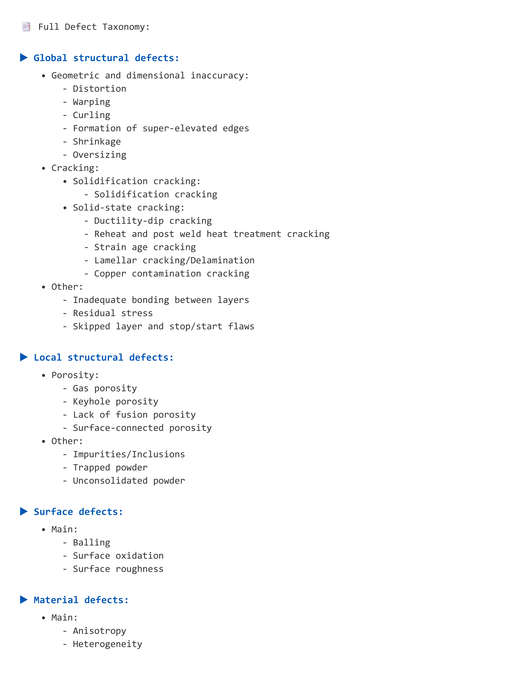

Current Research
Explainable Defect Diagnosis
Developing a Knowledge-Driven LLM-Based Decision-Support System for Metal Additive Manufacturing.
AM Cybersecurity
Working on advanced Anomaly Detection to secure Additive Manufacturing processes from cyber-physical threats.
Research Insights & AI Agent Progress
Ontology-Driven Decision Support
My current research focuses on a Knowledge-Driven LLM Agent that utilizes a structured Full Defect Taxonomy. By grounding the agent in formal ontology, it can systematically classify defects across Global Structural, Local Structural, Surface, and Material categories.
- Internal Knowledge Base: Uses dictionary lookups and fuzzy string matching for precise defect identification.
- External Grounding: Integrates SerpAPI and Google Scholar to fetch additional resources for defect mitigation.
Multi-Modal Vision Engine
A core feature of the agent is its AI Vision capabilities. The engine can analyze physical image inputs to identify likely defects and evaluate user hypotheses with visual evidence.
- Automated Inference: Vision models to parse image data for defect probabilities.
- Hypothesis Testing: Allows researchers to ask "Do you suspect Balling?" and receive evidence-based confirmation.

Agent Logic Flowchart
Multi-Modal & Text Engines

Full Defect Taxonomy
Ontology-Driven Structure

Balling Case Study
Surface Defect Analysis Output
Publications & Research
Investigating critical factors for implementing safety measures in RMG industry using ISM-MICMAC
B. M. Shahriar and M. S. Milki
6th Industrial Engineering and Operations Management (IEOM) Bangladesh Conference, 2023
View Paper (DOI)Assembly line balancing considering stochastic task times and production defects
G. N. Nur, A. Sadat, and B. M. Shahriar
1st IUT International Conference on Core Engineering Technology, 2024 (Accepted)
View Paper (DOI)Optimization of inbound logistics of automobile industry using Flexsim
A. M. Shihab Mahin, M. S. Solaiman, and B. M. Shahriar
7th Industrial Engineering and Operations Management (IEOM) Bangladesh Conference, 2024 (Accepted)
View Paper (DOI)Education
Ph.D. in Engineering and Applied Science
University of Massachusetts Dartmouth
Courses: Adv. Math Methods, Adv. Math Stats, Numerical Methods, Adv. Data Mining
2025 - Present
B.Sc. in Industrial and Production Engineering
Bangladesh University of Engineering and Technology (BUET)
Professional Experience
Lecturer
Military Institute of Science and Technology (MIST)
Department of Industrial and Production Engineering. Courses taught: Ergonomics and Safety Management, Quality Management, Operations Research, Project Management.
Full-Time
Lecturer
BGMEA University of Fashion and Technology (BUFT)
Department of Industrial Engineering. Courses taught: Numerical Method, Computer Integrated Manufacturing, Operations Research, Material Handling and Maintenance Management[cite: 14, 15].
Full-Time
Part-Time Lecturer
University of Dhaka (ILET)
Department of Leather Engineering. Course: Introduction to Mechanical Engineering (Theory and Sessional).
Part-Time